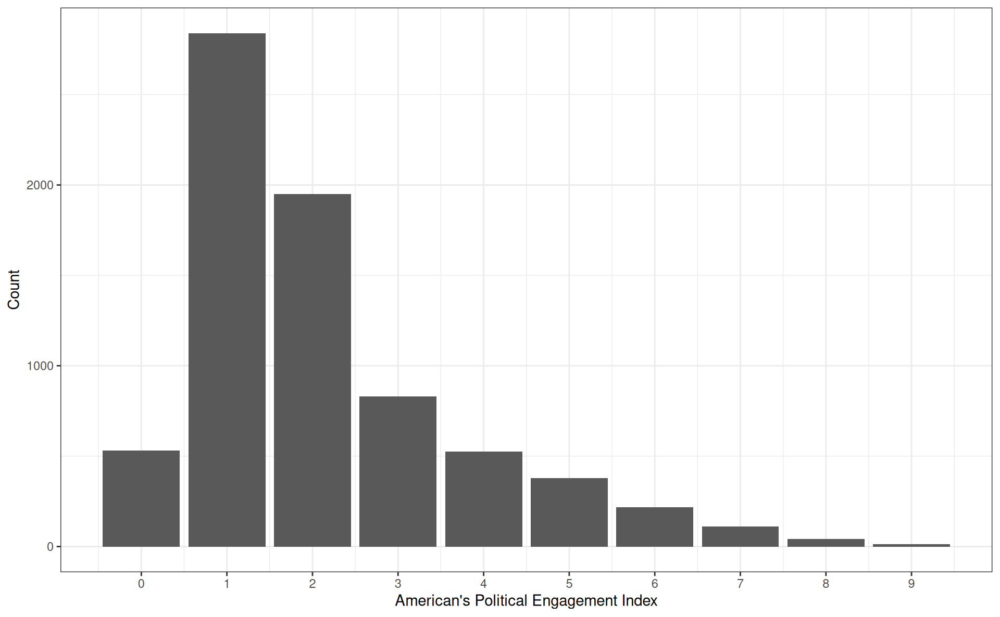
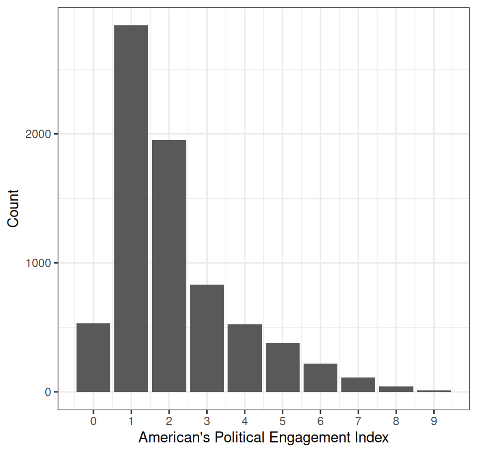
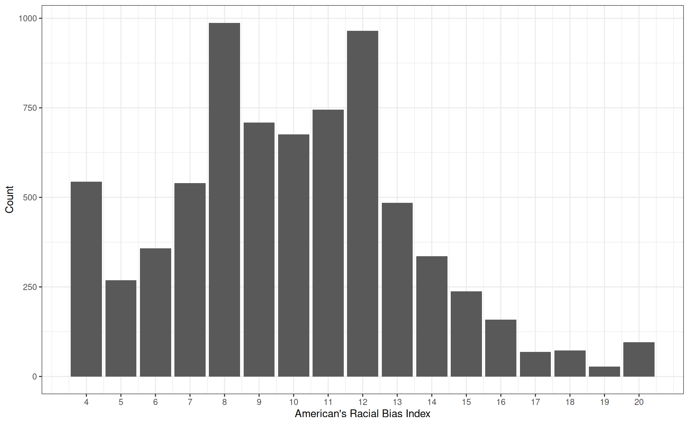
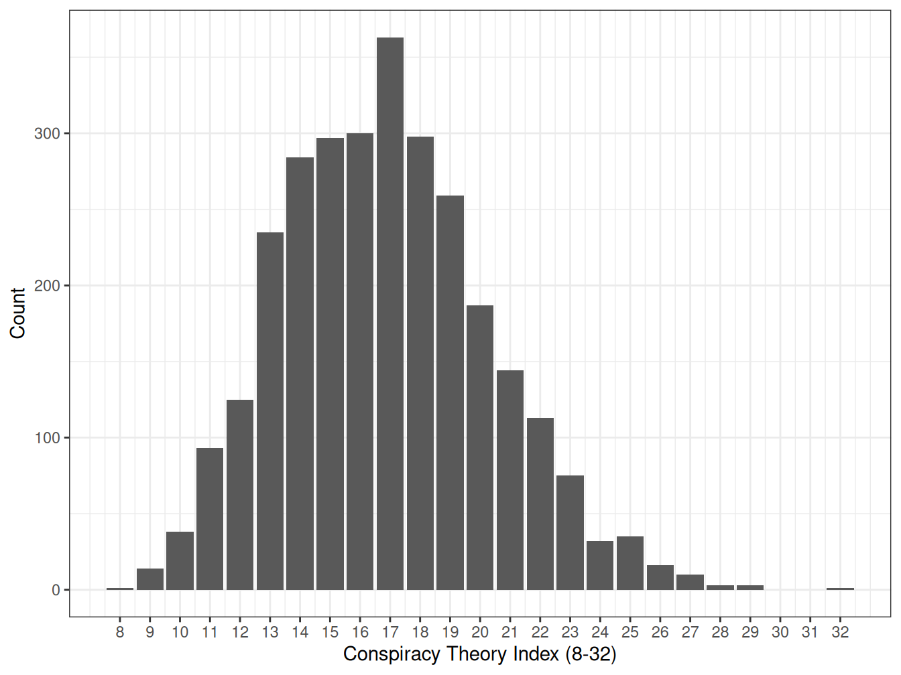

Min. 1st Qu. Median Mean 3rd Qu. Max. NA's
0.000 1.000 2.000 2.119 3.000 9.000 844 Today’s Agenda
Creating, Transforming and Indexing Variables
Building and analyzing additive indicies
Data 1: The American National Election Survey (ANES)
Data 2: Miller, Saunders and Farhart (2016)
Justin Leinaweaver (Spring 2026)
Univariate Analyses
Descriptive statistics (means, medians, modes, counts, SDs, etc)
Visualizations (bar plots, box plots, histograms)
This Week
Modifying variables to help us analyze and present them
Creating new variables to better measure our concepts
ANES questions on Americans’ “recent political activities” (within the last 12 months)
Gave money to a candidate (polact.givecand)
Gave money to a political party (polact.giveparty)
Gave money to another political organization (polact.giveoth)
Posted a political yard sign or a bumper sticker (polact.postsign)
Attended a political meeting in person (polact.meetings)
Attended a political meeting online (polact.onlinemeet)
Did other work for a political cause (polact.othwork)
Talked about 2020 vote choice with family or friends (polact.talkvote)
Talked about politics with family or friends (polact.talkpol)
Americans’ Political Engagement Index (ANES)

“Recent political activities” (within the last 12 months)

| question | Responses | Yes | Proportion |
|---|---|---|---|
| polact.talkpol | 7447 | 6810 | 0.91 |
| polact.talkvote | 7448 | 3152 | 0.42 |
| polact.givecand | 7449 | 1473 | 0.20 |
| polact.postsign | 7447 | 1277 | 0.17 |
| polact.onlinemeet | 7449 | 988 | 0.13 |
| polact.giveparty | 7445 | 961 | 0.13 |
| polact.giveoth | 7446 | 458 | 0.06 |
| polact.meetings | 7447 | 407 | 0.05 |
| polact.othwork | 7449 | 264 | 0.04 |
ANES questions on Americans’ “racial attitudes”
Have concerned feelings for other racial/ethnic groups (anes$oth.race.concern)
Imagine how they would feel before criticizing other groups (anes$oth.race.feel)
Try to understand the perspective of other racial/ethnic groups (anes$oth.race.persp)
Feel protective of someone due to race or ethnicity (anes$oth.race.protect)
Americans’ Racial Bias (ANES)
Min. 1st Qu. Median Mean 3rd Qu. Max. NA's
4.000 8.000 10.000 9.939 12.000 20.000 1003 
Why create an additive index of variables?
May create a better estimate of a complex concept
Allows a wider array of analysis tools
May reduce random measurement error
Our Indicies
- Americans’ political engagement
- Americans’ racial bias
Miller, Saunders & Farhart (2016)
Liberal Conspiracy Theories
- Bush lied about WMDs?
- Government knew 9/11 was going to happen?
- Government breached the levees on purpose?
- Republicans stole 2004 election?
Conservative Conspiracy Theories
- Obama born in the US?
- ACA create death panels?
- Climate change a hoax?
- Saddam Hussein involved in 9/11?
| Conspiracy Theories | Missing | Mean | SD |
|---|---|---|---|
| CT_Bush_WMDs | 123 | 3.03 | 0.94 |
| CT_Govt_911 | 135 | 2.34 | 0.94 |
| CT_2004_election | 133 | 2.33 | 0.89 |
| CT_Hussein_911 | 128 | 2.16 | 0.95 |
| CT_DeathPanels | 130 | 2.03 | 0.96 |
| CT_Katrina_Levees | 141 | 1.75 | 0.80 |
| CT_Obama | 110 | 1.62 | 0.89 |
| CT_Climate_Hoax | 122 | 1.60 | 0.88 |
- Variables recoded into 1-4 scale with 1 meaning “no belief in the CT” to 4 meaning the “most belief in the CT”
Americans’ Beliefs in Conspiracy Theories
Min. 1st Qu. Median Mean 3rd Qu. Max. NA's
8.00 14.00 17.00 16.84 19.00 32.00 166 
Americans’ Beliefs in Conspiracy Theories
Min. 1st Qu. Median Mean 3rd Qu. Max. NA's
0.000 6.000 9.000 8.844 11.000 24.000 166 
Americans’ Beliefs in Conspiracy Theories
Min. 1st Qu. Median Mean 3rd Qu. Max. NA's
0.0000 0.2500 0.3750 0.3685 0.4583 1.0000 166 
Political Knowledge
- Senate term length?
- Conservative party?
- John Roberts job?
- President Russia?
- Speaker of House?
- Biden’s job?
- Cameron’s job?
- House majority?
- Nominates judges?
- Reviews laws?
- Override veto?
- Secretary of State?
- Secretary of Treasury?
- PM of Canada?
| question | N | Yes | Proportion |
|---|---|---|---|
| JBiden_Job2 | 3092 | 2693 | 0.87 |
| More_Conservative2 | 3092 | 2445 | 0.79 |
| Pres_Russia2 | 3092 | 2332 | 0.75 |
| Reviews_Laws2 | 3092 | 2319 | 0.75 |
| Veto_Override2 | 3092 | 2086 | 0.67 |
| Majority_House2 | 3092 | 1977 | 0.64 |
| Nominates_Judges2 | 3092 | 1870 | 0.60 |
| DCameron_Job2 | 3092 | 1840 | 0.60 |
| JRoberts_Job2 | 3092 | 1800 | 0.58 |
| Speaker2 | 3092 | 1796 | 0.58 |
| Sec_State2 | 3092 | 1600 | 0.52 |
| Senate_Term2 | 3092 | 1377 | 0.45 |
| PM_Canada2 | 3092 | 1193 | 0.39 |
| Sec_Treasury2 | 3092 | 625 | 0.20 |
For Next Class
Build and evaluate the political knowledge index,
Read p81-98 in Chapter 4
Complete Exercises 2 and 4